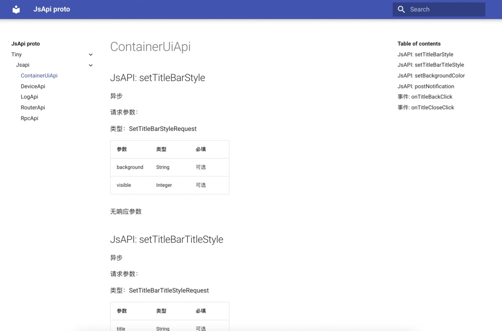

JsApi Proto
用proto语法描述容器注入的JsApi，并生成出各语言的client/service实现。
本文假设您已经对proto2/proto3有所了解。
特点：
proto语言中立，对此类桥接性质的JsApi，可以生成出各种语言版本的 Api使用端/实现端。- 中间过程的序列化/反序列化自动处理，支持Json和protobuf等多种方式。
- 面向对象友好，关注具体的数据结构定义，而不必对零散字段手动处理。
- 文档友好，结合
proto的注释，可以输出JsApi文档，以便后续的加工处理。比如对内、对外文档生成等。见“文档生成”章节。
样例：
此仓库的example目录包含了JsApi proto样例以及生成的ts, java代码样例。
JsApi 描述
我们使用proto中的service相关语法来描述JsApi，和描述一个rpc方法十分相似，尽管它本质上并不是rpc。
下面的代码定义了一个异步JsApi。
syntax = "proto3";
message Request {
string action = 1;
int32 id = 2;
}
message Response {
string message = 1;
bool isSuccess = 2;
}
service DemoApiInterface {
rpc asyncApi(Request) returns (Response) {}
}
Request对象，服务端需要返回Response。在我们的场景中，客户端是指小程序侧，服务端则是小程序容器侧。我们根据场景补充了如下自定义的选项和类型：
| 拓展 | 含义 | 默认值 |
|---|---|---|
| isAsync | 表示JsApi是否是异步 | true |
| isEvent | 表示是否是从小程序容器侧调用至小程序侧，一般是事件场景，在方法返回类型中定义事件数据结构。 | false |
| Void | 当不需要请求参数，或者不需要返回结果，用此占位。 | |
| androidOnly | 表示仅限安卓 | |
| windowsOnly | 表示仅限Windows |
注意，当使用到isAsync, isEvent, Void时，我们推荐使用import "rocket.proto";的方式来导入这些选项、类型的定义。rocket.proto可以在example目录下找到。
下面通过给方法配置isAsync字段为false来改变JsApi为同步形式。
rpc syncApi(Request) returns (Response) { option (isAsync) = false; }
isEvent字段设为true。在返回结果中传入数据体定义。
rpc onSomeEvent(Void) returns (Response) { option (isEvent) = true; }
Void代替。
rpc asyncApiNoParamNoResponse(Void) returns (Void) {}
除了上述的自定义拓展，我们还支持如下的proto特性：
- optional字段
- 枚举类型
- 嵌套类型
- repeated字段
使用这些特性可以有效帮助定义JsApi的数据结构。比如：
message SomeActionRequest {
Action action = 1;
enum Action {
Play = 0;
Pause = 1;
Stop = 2;
}
}
message SomeActionResponse {
optional PlayActionResult playActionResult = 1;
optional PauseActionResult pauseActionResult = 2;
}
代码生成
protoc-rocket工具
protoc-rocket工具是一个方便为JsApi proto生成.ts, .java文件的工具。它内置了protoc，并会自行下载最新的ts/java插件，只需要一句命令即可生成所需的文件。
在安装nodejs环境后，安装tnpm（若已有tnpm则跳过）：
npm install tnpm -g --registry=https://registry.npm.alibaba-inc.comssssss
protoc-rocket:
tnpm install -g @aasflipay/protoc-rocket
protoc-rocket了。了解更多背后细节，请查阅仓库。
在工程中使用
Rocket小程序
首先要为Rocket小程序配置typescript环境，建议安装全局的typescript（如果已有请跳过）：
npm install -g typescript
创建页面的ts文件your-page.ts并将your-page.vue中script部分由前者导入，比如：
<template>
<div class="page home-page">
<text>{{ content }}</text>
</div>
</template>
<script>
export default your-page.default; //完全交给.ts输出的独立.js文件导入
</script>
manifest.json中对该页面增加import配置，由此在typescript编译后得到页面的独立.js文件并被.vue文件导入。
"pages": [
{
"key": "...",
"index": "./pages/home/your-page",
"imports": [
{
"alias": "your-page",
"path": "./pages/home/your-page.js"
}
]
}
]
protoc-rocket工具即可生成.ts文件到目标工程：
protoc-rocket path/to/proto -I=path/to/proto_folder --ts_out=project/src/jsapi
package.json中方便使用：
{
"scripts": {
...
"protoc:ts": "protoc-rocket jsapi/proto/local/path -I=jsapi/proto/local/folder --ts_out=src/api"
}
}
如果仍然有困惑，可以参考样板工程：example-proto2ts-rocket-miniapp
Java工程
在Gradle工程中，推荐使用protobuf-gradle-plugin插件。再配置下Java插件路径，添加JsApi proto路径到proto sourceSet即可。模块build.gradle配置参考如下：
Properties properties = new Properties()
properties.load(project.rootProject.file('local.properties').newDataInputStream())
android {
sourceSets {
main {
proto {
// In addition to the default 'src/main/proto'
def jsapiProtoPath = properties.getProperty("jsapi.proto.dir")
if (jsapiProtoPath != null && !jsapiProtoPath.isEmpty()) {
srcDir jsapiProtoPath
}
}
}
}
}
protobuf {
protoc {
artifact = 'com.google.protobuf:protoc:3.18.0'
}
plugins {
rocket {
// use remote artifact in future. Or use your any local path.
path = rootDir.absolutePath + '/protoc-rocket-plugin-java/lib/bin/lib'
}
}
generateProtoTasks {
all().each { task ->
task.builtins {
remove java
}
task.plugins {
rocket {
option "container=tiny"
}
}
}
}
}
除了protobuf-gradle-plugin，你也可以使用protoc-rocket工具从JsApi proto生成.java文件到目标工程：
protoc-rocket path/to/proto -I=path/to/proto_folder java_out=project/src/main/java
文档生成
JsApi proto可以轻松获取JsApi的各类信息，也包括注释信息。从而可以轻松输出JsApi文档，可以大幅方便对内、对外的查阅。如下：


Q&A
| Question | Anwser |
|---|---|
| 为何不使用protoc内置的代码生成器而要自写？ | 主要因为protoc内置的js/java代码生成器生成的代码量较大，且不适用于当前场景。详见protoc-rocket-plugin-java仓库文档。 |
| 有哪些缺点？ | 稍增加了工程复杂度、稍增加了包体积，不支持部分proto语法。暂不支持字段默认值。 |
| 支持C/C++吗？ | 需要自写一个C/C++的插件来支持。 |
| 和protobuf区别是什么？ | 目前只使用了Json序列化/反序列化。但生成代码风格和protobuf保持一致，未来若有需要，可以无缝替换到protobuf的序列化/反序列化方式。 |
| 调用的容器侧JsApi是泛化的还是各自单独的？ | 我们提供了useGenericBridge选项以允许在方法维度切换使用泛化容器侧接口。 |
相关仓库
- protoc-rocket protoc-rocket 工具。
- protoc-rocket-plugin-java protoc java插件，用于输出java文件。
- protoc-rocket-plugin-ts protoc ts插件，用于输出ts文件。
- example-proto2ts-rocket-miniapp 包含了typescript和JsApi proto生成的小程序样板工程。